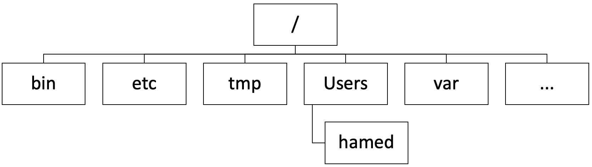

1. Introduction to Unix#
This lectures covers an introduction to Unix system, commands and the file system.
Attribution The content of this lecture are modified from three excellent sources: Introduction to Bash (Shell) from Earth Lab CU Boulder; Intro to Unix from Columbia University; and The Unix Shell from Software Carpentry.
1.1. Background#
We interact with computers in many different ways, such as through a keyboard and mouse, touch screen interfaces, or using speech recognition systems. The most widely used way to interact with personal computers is called a graphical user interface (GUI). With a GUI, we give instructions by clicking a mouse and using menu-driven interactions.
While the visual aid of a GUI makes it intuitive to learn, this way of delivering instructions to a computer scales very poorly and it is not reproducible. Imagine the following task: for a literature search, you have to copy the third line of one thousand text files in one thousand different directories and paste it into a single file. Using a GUI, you would not only be clicking at your desk for several hours, but you could potentially also commit an error in the process of completing this repetitive task. This is where we take advantage of the Unix shell. The Unix shell is both a command-line interface (CLI) and a scripting language, allowing such repetitive tasks to be done automatically and fast. With the proper commands, the shell can repeat tasks with or without some modification as many times as we want. Using the shell, the task in the literature example can be accomplished in seconds.
1.2. The Shell#
Shell is the primary program that computers use to receive code (i.e. commands) and return information produced by executing these commands (i.e. output). These commands can be entered via a Terminal, which you will work with in this course.
Using a Shell helps you:
Navigate your computer to access and manage files and folders (i.e. directories).
Efficiently work with many files and directories at once.
Run programs that provide more functionality at the command line such as git for version control.
Launch programs from specific directories on your computer such as Jupyter Notebook for interactive programming.
Use repeatable commands for these tasks across many different operating systems (Windows, Mac, Linux).
Shell is also important if you need to work on remote machines such as a high performance computing cluster (HPC) or the cloud.
The most popular Unix shell is Bash (the Bourne Again SHell — so-called because it’s derived from a shell written by Stephen Bourne). Bash is the default shell on most modern implementations of Unix and in most packages that provide Unix-like tools for Windows. Note that ‘Git Bash’ is a piece of software that enables Windows users to use a Bash like interface when interacting with Git.
1.3. Terminal Sessions On Your Computer#
The terminal program that you use to run Bash commands will vary depending upon your computer’s operating system.
Mac (OS X)
You can use the program called Terminal, which uses the Bash implementation of Shell and is installed natively on the Mac OS.
You can open Terminal by finding and launching it from Spotlight (or from /Applications/Utilities).
Linux
Many Linux computers use the Bash implementation of Shell, which you will learn to test for in the section below.
You can open the program called Terminal (or Terminal Emulator) by finding and launching it from your list of programs.
Windows
There are many options for running Bash on Windows. In this course, we recommend using Windows Subsystem for Linux (WSL). WSL is a feature of the Windows operating system that enables you to run a Linux file system, along with Linux command-line tools and GUI apps, directly on Windows, alongside your traditional Windows desktop and apps. You can read more about it here.
To enable WSL on windows, follow the steps outlined here. The default Ubuntu distribution works well with the content of this course, and you do not need to change it.
1.4. Home Directory#
To understand what a “home directory” is, let’s have a look at how the file system as a whole is organized. For the sake of this example, check the following figure that illustrates the file system on Hamed’s computer. After this illustration, you’ll be learning commands to explore your own filesystem, which will be constructed in a similar way, but not be exactly identical.
On a Unix computer, the filesystem looks like something this:
{kind=link}
The filesystem looks like an upside down tree. The topmost directory is the root directory that holds everything else. We refer to it using a slash character, /, on its own; this character is the leading slash in /Users/nelle.
Inside that directory are several other directories: bin (which is where some built-in programs are stored), lib (for the software “libraries” used by different programs), users (where users’ personal directories are located), tmp (for temporary files that don’t need to be stored long-term), and so on.
By default, when you open your terminal it lands in your home directory, which in our example is /Users/hamed. We know that this directory is stored inside /Users because /Users is the first part of its name. Similarly, we know that /Users is stored inside the root directory / because its name begins with /.
Note
There are two meanings for the / character. When it appears at the front of a file or directory name, it refers to the root directory. When it appears inside a path, it’s just a separator.
1.6. Getting help#
Every command in bash has multiple options that you can pass to change the output. There are two ways to find out what options are available:
Pass
--helpto any command:
$ ls --help
Read the manual using
man:
$ man ls